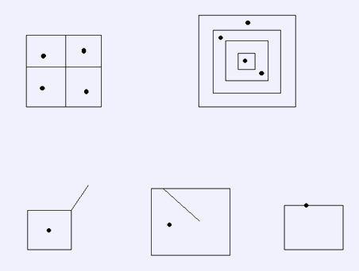

输入文件的第一行中包括两个整数n,m。分别表示地图上的国家数和描述国家的边界的线段的数量。1<=n<=600，1<=m<=4000。接下来n行，每行用一对数描述了某个国家的主力军队的坐标。接下来m行，每行有4个数x1,y1,x2,y2，（x1,y1）-(x2,y2)描述了一条国界线。所有点的坐标都是0-10000之间的整数。保证输入的所有线段至多只会在线段交点处相交。整张地图上有且仅有一块面积无限的空白区域不属于任何国家。每一条国界线两侧的区域或者隶属于两个不同的国家，或者分隔了一个国家与那块无穷大的空白区域。即保证一条国界线两侧的区域不同时属于同一个国家或是同时都是空白区域。所有封闭区域内部包含且仅包含一支主力军队，表示了该区域的归属。

例如上图中第一行的数据是合法的。而第二行中的数据都是不合法的。左边的那幅图包含线段两侧都是空白区域；中间的图包含线段两侧区域同时属于同一个国家；右边的图中军队被布置在了国界线上，因此非法；此外若最右侧的图中若没有军队也是非法的。保证输入文件提供的数据都是合法的，你的程序不需要进行数据合法性的判定。